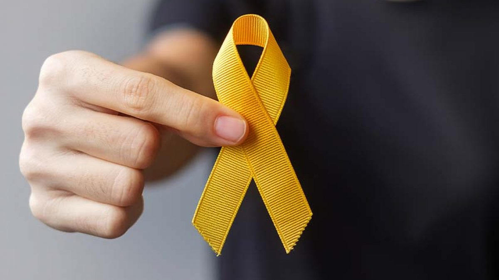

Setembro Amarelo é um mês dedicado à conscientização sobre a prevenção do suicídio e à promoção da saúde mental. A campanha, iniciada no Brasil em 2014, tem ganhado cada vez mais relevância e visibilidade, refletindo a necessidade urgente de enfrentar uma questão que, por muito tempo, foi cercada de tabu e silêncio. O mês de setembro foi escolhido por coincidir com o Dia Mundial de Prevenção do Suicídio, celebrado em 10 de setembro, e a cor amarela foi escolhida por simbolizar a luz e a esperança, oferecendo um contraste positivo ao tema sombrio. A prevalência do suicídio como um problema de saúde pública é alarmante. De acordo com dados da Organização Mundial da Saúde (OMS), cerca de 800 mil pessoas morrem por suicídio a cada ano, o que equivale a uma pessoa a cada 40 segundos. No Brasil, o cenário também é preocupante, com taxas que têm chamado a atenção de especialistas e instituições. Esse fenômeno não faz distinção de idade, classe social ou gênero, afetando milhões de pessoas em todo o mundo. Portanto, é crucial que abordemos o tema com seriedade e compaixão, reconhecendo que o suicídio pode ser prevenido através de um esforço coletivo para promover a saúde mental e oferecer suporte adequado.
O Setembro Amarelo promove uma ampla gama de atividades para disseminar informações e reduzir o estigma associado à saúde mental. Entre as ações realizadas estão campanhas de mídia, palestras, debates, caminhadas e eventos comunitários. Essas iniciativas visam não apenas aumentar a visibilidade do problema, mas também educar a população sobre os sinais de alerta e a importância de buscar ajuda. Em muitos casos, as pessoas que estão em risco de suicídio apresentam sinais que podem ser identificados por familiares e amigos, como mudanças abruptas no comportamento, expressões de desesperança, ou a sensação de estar sobrecarregado com problemas que parecem insuperáveis. Além das atividades de conscientização, o Setembro Amarelo destaca a importância do suporte emocional e do acesso a serviços de saúde mental. Muitas vezes, a falta de acesso a tratamento adequado e o medo do estigma podem impedir que indivíduos busquem a ajuda de que necessitam. É fundamental que os profissionais de saúde estejam bem preparados para oferecer suporte e que haja uma rede de apoio eficiente, incluindo linhas de apoio e serviços de emergência para situações de crise. O fortalecimento da rede de suporte social também é uma medida importante; amigos e familiares desempenham um papel crucial no reconhecimento dos sinais de alerta e no oferecimento de apoio contínuo.
A prevenção do suicídio envolve também uma abordagem proativa em relação à saúde mental. Promover o bem-estar emocional, desenvolver resiliência e habilidades para lidar com o estresse são aspectos essenciais para reduzir o risco de crises. Programas educacionais em escolas e ambientes de trabalho que enfatizem a importância da saúde mental e forneçam recursos e suporte podem fazer uma diferença significativa na vida das pessoas. Criar um ambiente onde a saúde mental seja discutida abertamente e sem julgamento ajuda a desestigmatizar as questões relacionadas e encoraja aqueles que estão lutando a buscar ajuda sem medo.
Setembro Amarelo é mais do que uma campanha; é um chamado à ação para cada um de nós. Encoraja a empatia, a compreensão e a solidariedade em relação aos desafios enfrentados por aqueles que estão passando por dificuldades emocionais. Ao engajarmo-nos ativamente nessa causa, contribuímos para a criação de uma sociedade mais saudável e acolhedora, onde o sofrimento é reconhecido e abordado com seriedade. Ao final deste mês de conscientização, é essencial que o compromisso com a prevenção do suicídio e a promoção da saúde mental não cesse. Devemos continuar a fortalecer a rede de apoio, educar a população e buscar formas eficazes de oferecer suporte. A vida é um bem precioso e, ao trabalhar juntos, podemos fazer uma diferença significativa na luta contra o suicídio, oferecendo esperança e apoio para aqueles que mais necessitam. O Setembro Amarelo nos lembra que a prevenção é possível e que cada um de nós tem um papel a desempenhar. Que possamos levar adiante essa mensagem de esperança e solidariedade, contribuindo para um mundo onde todos tenham a chance de encontrar ajuda e viver uma vida plena.
w